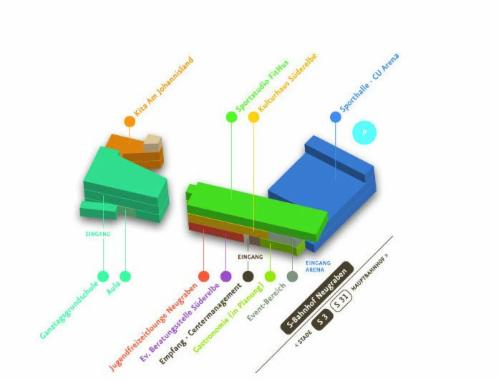
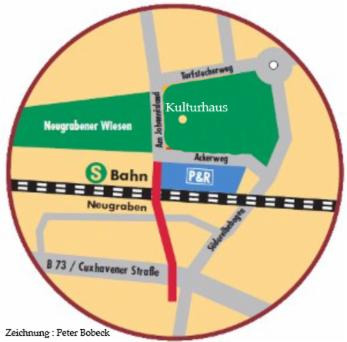

Hier finden Sie unsKulturhaus Süderelbe e.V. Im BGZ Süderelbe Am Johannisland 2 (I OG) 21147 Hamburg Tel. 7967222 Direkt am S-Bahnhof Neugraben (S3 /S 31) gelegen, ist das Kulturhaus sehr gut zu erreichen. |
|  |
| Falls die Straße "Am Johannisland" bei Google-Maps noch nicht zu finden sein sollte: "Ackerweg 21147 Hamburg" eingeben. |
|  |